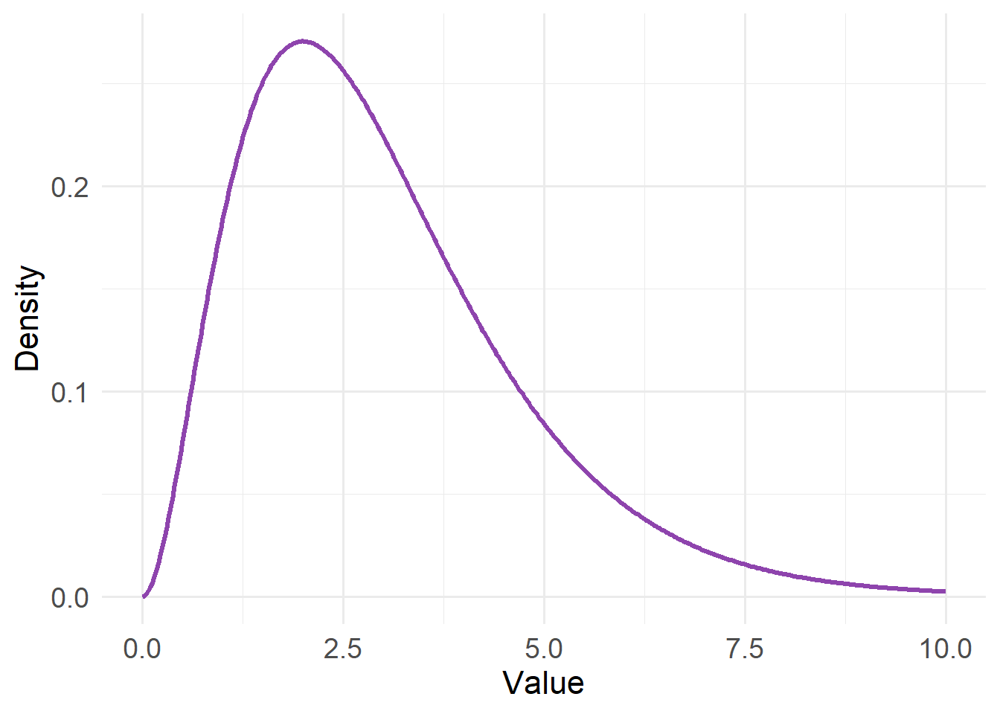
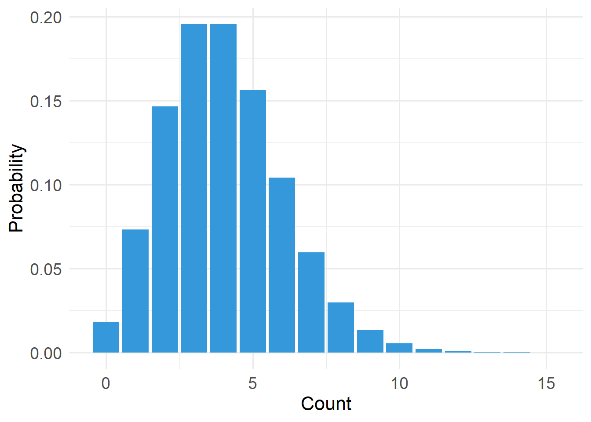
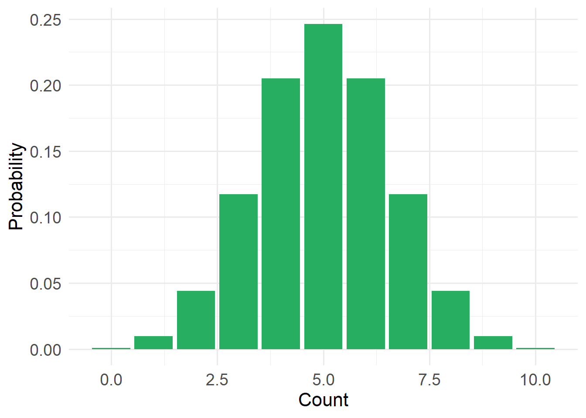
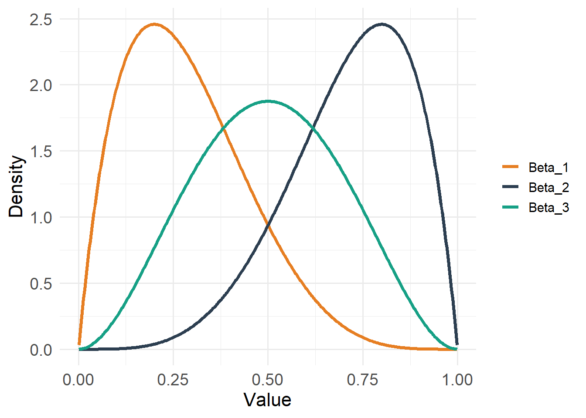
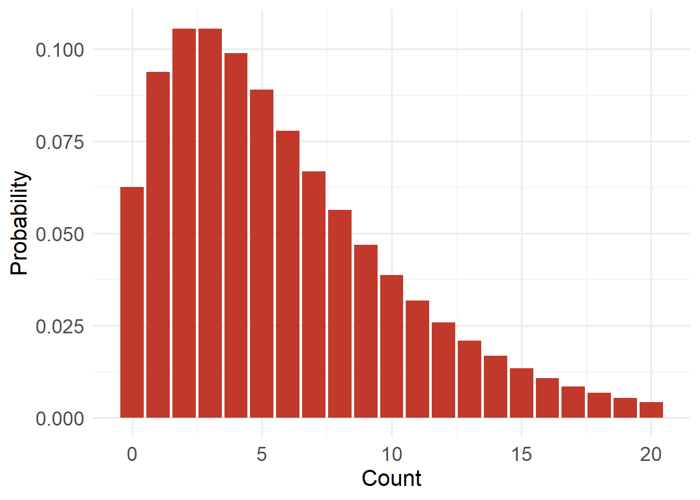
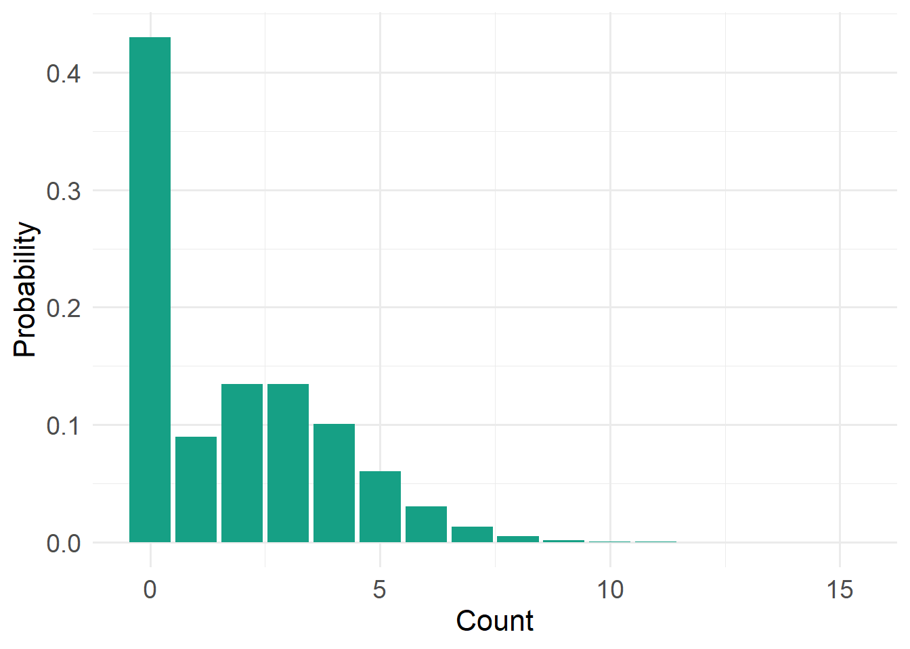

20 Introduction to Models
20.1 From data to data-generating processes
In this chapter, we make a necessary transition: from practical handling of data to thinking conceptually about data-generating processes. By now, you have entered your data into a spreadsheet (or some other organized data table). Now, it is time to modify this “data = spreadsheet” thinking and consider that data are outcomes of often complex processes. That is, data are not simply abstract numbers.
As a thought exercise, consider a set of mass values for a jackalope. The body mass of marsh-water guzzling jackalopes (Lepus antilocaprahydropicus) varies because individuals differ in body size and condition. Depending on recent food capture or hydration state, mass may fluctuate within individuals over very short time scales, driven by rapid changes to a complex digestive and metabolic machinery. Additional variation also arises during measurement due to instrument precision, calibration drift, and movement or posture on the scale. In sum, there are a myriad processes leading to a simple measurement.

Every measurement reflects two central components of a system, which will be the focus of this short chapter:
- Component #1: Systematic structure (signal): patterns deriving from mechanisms and constraints
- Component #2: Unmeasured variation (noise): variability generated by unidentified mechanisms, measurement constraints, and nmeasured stochastic processes
These two components are co-products of the same data-generating processes.
Once you start thinking about data in this way, it perhaps becomes clearer that not all variation in a given dataset carries the same meaning. Some variation reflects real structure in the system that we actually care about. Some has to do with the natural limits of the data themselves. Other variation comes from randomness, measurement limits, or processes that we did not explicitly account for.
So, with that, let us delve into the two fundamental components of set of measurements.
20.2 Component #1: Systematic structure (signal)
When we collect data, we are not merely cataloging patterns or associations. I would argue that few scientists have been driven by the search for simple associations independent of causes. If data are outcomes of data-generating processes, then those processes must, by definition, include causes. In ecology and field biology, we routinely speak in causal language:
- Food availability influences body condition
- Temperature affects metabolic rate
- Predators reduces nest success
- Groundwater discharge stabilizes stream temperature
In our work, we are observing the results of interacting forces operating in real systems. Those forces operate directionally (in time and space). Something influences something else; that something influences yet another something. And so forth. And despite the often misinterpreted adage “Correlation does not equal causation,” ecologists rarely stop at correlation. Associations are taken almost as cues to hypothesize about the mechanisms that generated them.
Even when we fully describe a simple univariate distribution, we are implicitly asserting something about a set of generative processes: that events occur independently, that variability scales with the mean (in some fashion), that measurements fluctuate around a central tendency (in some fashion). In a regression model (e.g. GLM, GLMM), the “signal” is simply the structured component of the data-generating process — the part we attribute to directional influences of predictors. The model does not create causation; it formalizes assumptions how we hypothesize about how different putative causes may produce observable patterns. For example, a recent –and very well-written– paper (abstract at right) by our own University of Wyoming colleagues clearly demonstrates this causal mindset when describing the results on an analysis.

Furthermore, many of the primary theories in biology and ecology are inherently causally structured (as they are based on many sets of observational and experimental studies):
| theory | year(s) | core causal mechanism |
|---|---|---|
| Evolution by Natural Selection | 1859 | Heritable variation causes differential survival and reproduction |
| Competitive Exclusion Principle | 1934 | Limiting resources cause competitive displacement |
| Optimal Foraging Theory | 1966 | Fitness maximization drives adaptive foraging decisions |
| Island Biogeography Theory | 1967 | Isolation and area determine immigration and extinction rates |
| Intermediate Disturbance Hypothesis | 1978 | Disturbance prevents competitive exclusion and maintains diversity |
| Modern Coexistence Theory | 1990s | Niche differences stabilize species coexistence |
| Neutral Theory of Biodiversity | 2001 | Demographic stochasticity drives community composition |
20.2.1 Identifying causal language
We often know causal words when we see them. When we are assessing the inferences (associational or causal) made in scientific papers, our first step is to identify if associational or causal language is being employed.
For a bit of fun, read the statements below, decide if the statement makes claim about associations or causes, and then click to expand the box.
Importantly, the use of causal language in scientific subfield has greatly increased. Some interesting readings are: *  *
*
20.3 Component #2: Unmeasured Variation (Noise)
The second component of any set of measurements is unmeasured variation, often called noise. Unfortunately, the word noise has morphed into a sort of statistical perjorative that we equate with annoying, irrelevant, or cumbersome. So, why is noise so important? It is important because a model of the world is incomplete if it explains only the mean of a signal but ignores how variability behaves around that mean. Explaining the average outcome is only half the story. We must also understand why observations deviate from that average (or other measure of central tendency).
In other words, noise is not a nuisance obscuring an otherwise pristine biological or ecological signal. It is not static layered on top of clear understanding. At its core, noise refers to the myriad additional processes operating in concert with the systematic structure of the data we have chosen to model. These processes are very real, and often scientifically interesting. Noise can arise from:
- Individual variation (heterogeneity)
- Environmental fluctuations
- Measurement error (accuracy and precision)
- Unmeasured drivers
- Stochastic processes
At first glance, this list may feel extremely unsettling. It suggests that much of the world lies beyond direct and easy measurement. But to a scientist, this diversity of variation represents opportunity. Each source of variability reflects some underlying mechanism. Each pattern of deviation welcomes new explanation.
To be clear, noise is not something we subtract away after modeling the “real” part of the system. Like systematic structure, it has structure of its own. Different mechanisms generate different kinds of variability. Those recognizable and stereotypical patterns of variability are what we call distributions.
20.4 Data Distributions
If variability has structure, we need a precise language to describe it. In statistics, that language is the probability distribution. So, what is a distribution?
A distribution is an explicit statement about how randomness originates in the data-generating process.
A data distribution specifies:
- What values are possible (constraints)
- How variability scales with the mean
- Whether outcomes are discrete or continuous
- Whether extreme outcomes are rare or common
The key insight is this: when we choose a distribution, we are choosing a mechanistic description of how variability arises. That is, in the simple process of applying a distribution to a set of measurements, we are applying a mental causal model to the data, such as:
- Count data: We assume that variance generally scales with the mean
- Proportion data: We acknowledge constraints on the data (bounded between 0 and 1)
Once we begin looking at distributions as mental models, it becomes clear that different distributions imply different stories about how data were generated. The Normal distribution reflects additive variation around a central tendency. Count distributions arise when outcomes reflect the accumulation of discrete events. Other distributions emerge when values are bounded, strictly positive, or shaped by multiplicative processes (such as the Gamma distribution). We are acknowledging that the features of the dataset are caused by some process or processes.
In what follows, I introduce several commonly used distributions and the types of data-generating processes they can represent. This is by no means an exhaustive list. As you read, focus less on their mathematical formulas and more on the assumptions they encode about randomness, constraints, and mechanism.
20.4.1 Gaussian (Normal) Distribution
Type: Continuous
Support: \(-\infty < x < \infty\)
Variance/mean relationship:
- Variance is constant
- Does not depend on the mean
20.4.2 Gamma Distribution

Type: Continuous
Support: \(0 < x < \infty\)
Variance/mean relationship:
- Variance proportional to μ² (square of the mean)
- Variability increases faster than mean
20.4.3 Poisson Distribution

Type: Discrete
Support: \(x \in \{0,1,2,\dots\}\) (x is an element of…)
Variance/mean relationship:
- Variance equals the mean
- Variability increases linearly with μ (mean)
20.4.4 Bernoulli Distribution (a type of binomial distribution)

Type: Discrete
Support: \(x \in \{0,1\}\), where 1 = success and 0 = failure
Variance/mean relationship:
- Variance = \(p (1-p)\)
- Constrained by bounds 0 and n
20.4.5 Beta Distribution

Type: Continuous
Support: \(0 < x < 1\)
Variance/mean relationship:
- Variance depends on both mean and precision
- Constrained between 0 and 1 (but does not include 0 or 1)
20.4.6 Negative Binomial Distribution

Type: Discrete
Support: \(x \in \{0,1,2,\dots\}\) (x is an element of…)
Variance/mean relationship:
- Variance = \(μ + μ²/k\) (where k is a dispersion parameter)
- Variance exceeds mean
20.4.7 Zero-Inflated Poisson Distribution

Type: Discrete
Support: \(x \in \{0,1,2,\dots\}\) (x is an element of…)
Variance/mean relationship:
- Extra zeros inflate variance
- Variance greater than Poisson expectation
Next, will will introduce Generalized Linear Models so can understand their distinct advantages over other, older approaches.